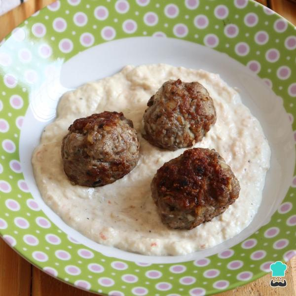
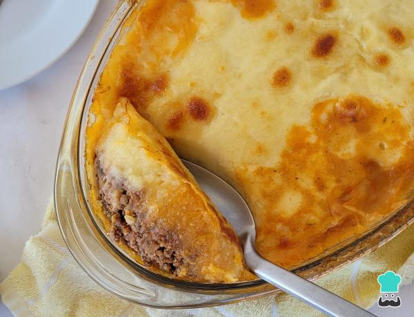
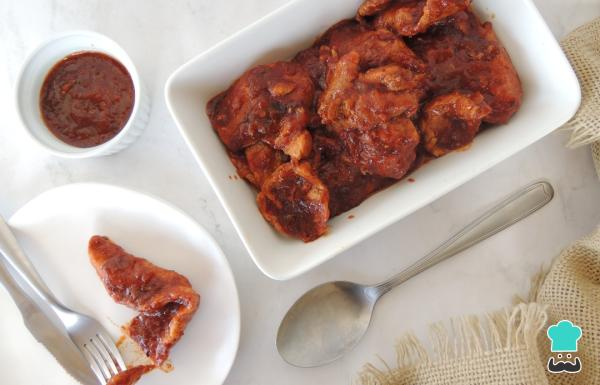
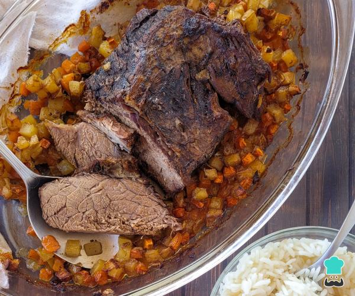
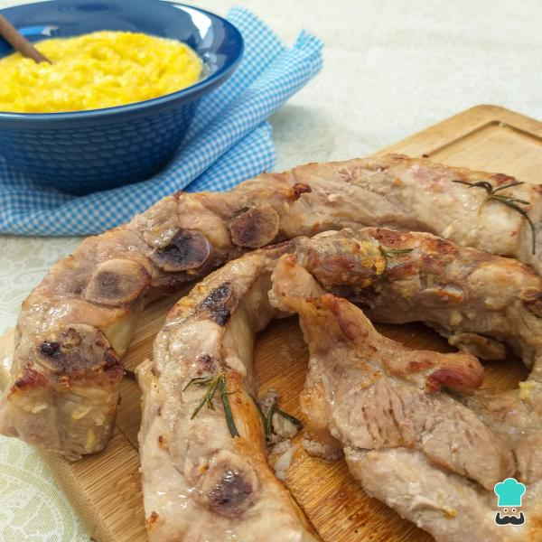

Almôndegas com creme de cebola
- Leve uma panela ao fogo baixo e derreta a manteiga. Coloque a cebola fatiada e mexa de vez em quando até dourar e murchar. Esse prato também é conhecido como bolinho de carne com creme de cebola.
- Agora coloque a cebola no liquidificador com o creme de leite e tempere com sal e pimenta a gosto. Bata até ficar na textura que você deseja: mais rústica ou mais lisa.
- Agora vamos preparar as almôndegas: em uma tigela grande coloque todos os ingredientes exceto o azeite.
- Misture bem com as mãos até todos os ingredientes ficarem bem incorporados. Modele bolinhas no tamanho que desejar.
- Leve uma panela ao fogo médio, despeje o azeite e frite as bolinhas de carne sem encher a panela.
- Sirva em seguida suas almôndegas com o creme de cebola. É um prato delicioso!

Purê de batata com carne moída
- Para fazer esse purê de batata recheada com carne moída, coloque as batatas na panela de pressão e cubra com água, 3 dedos acima delas. Feche e quando começar o chiado, conte 3 minutos. Desligue e aguarde a pressão sair sozinha antes de abrir.
- Na panela, coloque o óleo e o alho picado. Quando estiver corando, acrescente a carne moída e refogue.
- Acrescente a cebola cortada em tiras, o sal, a pimenta-do-reino e o molho de tomate. Misture bem.
- Adicione a água e deixe ferver. Acrescente o cheiro-verde picado e misture. Seu recheio esta pronto!
- Retire as batatas da panela, descasque com cuidado e amasse para que fique bem lisinho.
- Em uma panela, coloque a manteiga e, assim que ela derreter, acrescente a batata amassada. Deixe em fogo médio e misture bem.
- Coloque o leite e o sal. Misture com uma colher para que a mistura fique homogênea e sem pedaços de batata.
- Para a montagem, coloque o recheio de carne em uma travessa, espalhando sobre todo o fundo.
- Em seguida, com a ajuda de uma colher, coloque o purê delicadamente sobre ela.
- Coloque fatias de queijo por cima do purê e leve ao forno, à 180 graus, até dourar.
- A casquinha que o queijo forma em cima do purê dá o toque especial para esse prato! Para complementar, você pode fazer um mix de saladas e está pronto para servir! Bom apetite!

Bife ao molho na panela de pressão
- Adicione os temperos: o alho amassado, o sal e a pimenta-do-reino
- Coloque o óleo na panela e deixe em fogo médio. Quando esquentar, disponha os bifes um sobre o outro e deixe fritar.
- Quando todos estiverem fritos, coloque a cebola picada e misture. Deixe por 1 minuto.
- Adicione o molho de tomate e a água. Tampe e assim que pegar pressão (começar a chiar) conte 3 minutos, desligue e deixe a pressão sair sozinha.
- O resultado será um molho encorpado e um bife bem suculento!
- Esse bife ficará ótimo para o almoço ou jantar, além de ser super rápido de preparar! Bom apetite!

Acém assado no forno
- Em um recipiente, coloque o acém, os temperos (sal, pimenta-do-reino, páprica defumada) e o vinagre. Espalhe bem sobre toda a carne e reserve.
- Em outro recipiente, coloque a cenoura, a batata e a cebola.
- Adicione os temperos (sal, pimenta-do-reino e lemon pepper) e o azeite. Misture até que os legumes estejam cobertos por eles.
- Na frigideira, coloque o óleo e deixe esquentar. Em seguida, ponha o acém e deixe selando por 3 minutos.
- Vire e repita o processo. Retire e reserve.
- Coloque os legumes e deixe refogando por 2 minutos.
- Coloque o acém em uma travessa que possa ir ao forno e disponha os legumes ao seu redor. Lembre-se: você também pode fazer esse acém assado no forno elétrico.
- Cubra com papel alumínio e leve ao forno, a 200 graus, por 2 horas. Retire o papel e deixe dourar por mais 30 minutos.
- O resultado é uma carne com sabor apurado e com complemento, pronta pra ser servida! Nos conte nos comentários o que achou dessa receita prática!

Costelinha de porco com creme de milho
- Coloque as costelinhas em uma vasilha e cubra com azeite, o caldo de limão espremido e todos os temperos. Deixe marinar na geladeira por, no mínimo, 30 minutos.
- Coloque as costelinhas na cesta da AirFryer e regue com mais um fio de azeite. Programe o aparelho a 200°C por cerca de 20 minutos (vire na metade do tempo).
- Enquanto isso, prepare o creme de milho: bata bem a metade do milho sem a água, o leite e o amido no liquidificador.
- Leve uma panela ao fogo médio, acrescente a manteiga e o alho e mexa até dourar.
- Coloque na panela o milho batido, o restante do milho e o sal. Mexa bem até engrossar.
- Desligue o fogo e está pronto seu creme de milho cremoso!
- Agora é só servir as costelinhas de porco assadas na AirFryer e ainda quentes com o creme de milho caseiro. Está pronto seu delicioso almoço ou jantar de conforto!
